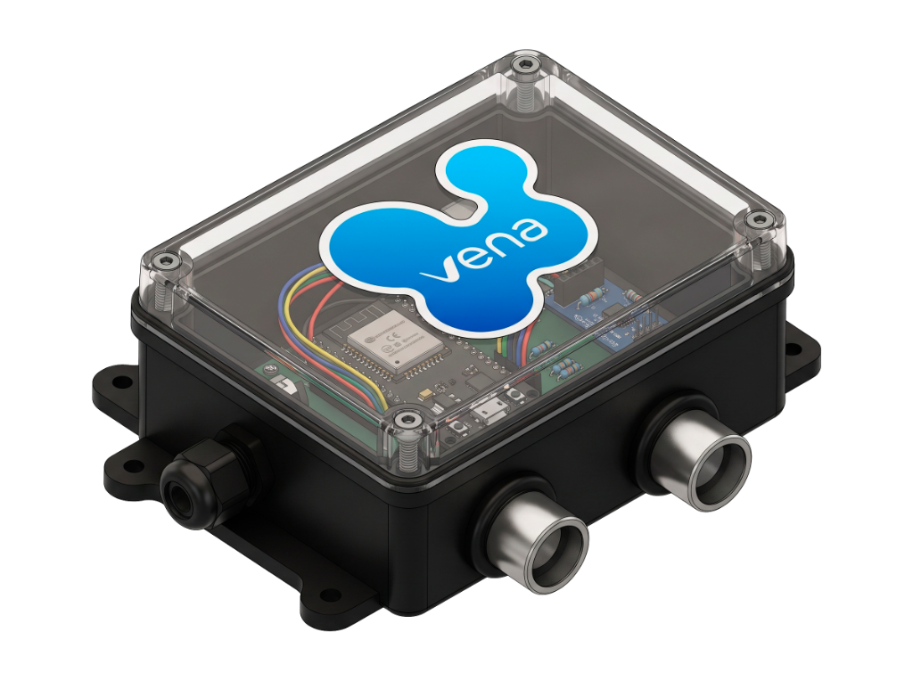

Resposta Tardia
As equipes só são acionadas após o transbordo atingir o asfalto e interromper o trânsito.
Sensores dentro do bueiro medem lixo e água em tempo real e cruzam os dados com a previsão de chuva, para a limpeza chegar antes da enchente.

Sem leitura interna das galerias, a gestão urbana só descobre o entupimento quando a rua já alagou.
As equipes só são acionadas após o transbordo atingir o asfalto e interromper o trânsito.
Detritos sólidos acumulam silenciosamente na grade pluvial e bloqueiam o escoamento antes da chuva.
Enchentes bloqueiam rodovias, ruas e túneis, dificultam a mobilidade e causam danos materiais.
Metas operacionais desenhadas para transformar a manutenção urbana reativa em prevenção contínua.
Cruzar a obstrução de cada bueiro com a previsão meteorológica para despachar a limpeza antes da chuva.
Acompanhar continuamente o acúmulo de lixo na grelha e a subida da água com sensores ultrassônicos.
Alertar pedestres e motoristas com LEDs no bueiro e alerta de via interditada emitido pela Defesa Civil.
Recebe a fila de limpeza já ordenada pelos bueiros mais obstruídos antes da chegada da chuva.
Acompanha o nível de risco de cada ponto em tempo real e emite alerta preventivo de via interditada.
Conta com alertas luminosos imediatos no próprio bueiro, alerta de via interditada emitido pela Defesa Civil e vias menos sujeitas a enchentes.
Mais clareza para identificar riscos, priorizar equipes e proteger a cidade do primeiro sinal à ação certa.
Cruza resíduos acumulados e nível da água para revelar a condição real do bueiro sem deixar obstruções passarem despercebidas.
Com previsão de chuva, bueiros com detritos acumulados sobem automaticamente na fila de limpeza preventiva.
Adicione novos bueiros monitorados à rede municipal sem precisar alterar os aparelhos que já estão instalados.
Sensores ultrassônicos e sinalização luminosa em LED integrados em um módulo compacto com proteção estanque.
Leve o Vena para a drenagem do seu município e antecipe a limpeza antes da chuva.